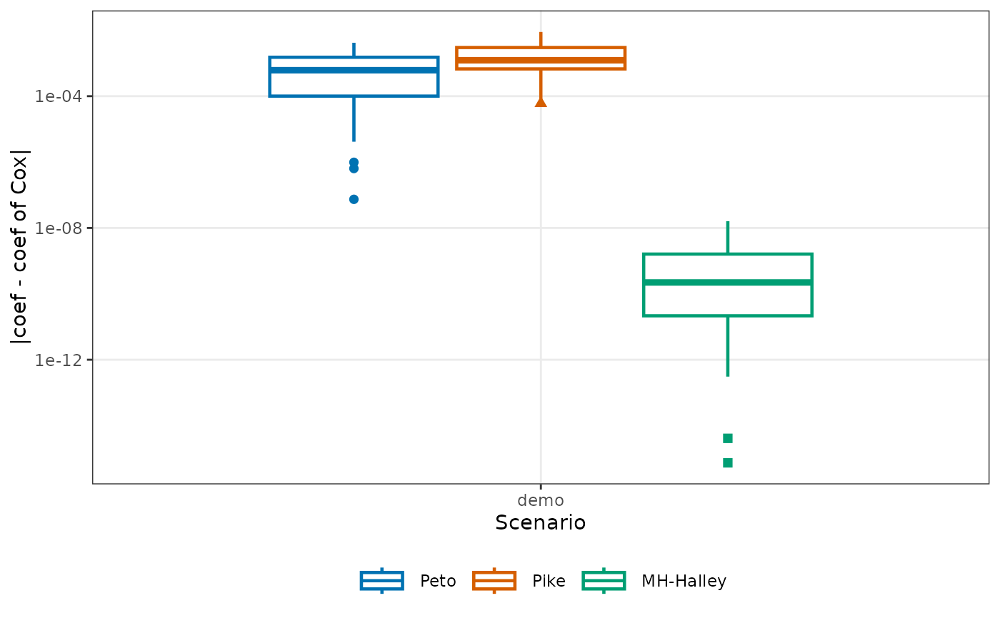

Compare operating characteristics of HR estimators across scenarios
Source:R/CompareOC.R
CompareOC.RdRuns Monte Carlo simulations across one or more two-group trial scenarios
and compares the estimators of EstHR: their deviation from a
reference estimator (by default the Cox estimate) on the log scale, the
ratio of their standard errors to that of the reference, their bias, root
mean squared error (RMSE), and the coverage of their confidence intervals
relative to the true hazard ratio, and the computing time. Each scenario
specifies its own design (sample sizes, hazard, true HR, accrual length,
target number of events, and optionally dropout, strata, and the rounding
of times). The function uses GenSimData to generate the
replicate datasets and EstHR to compute the estimates.
Usage
CompareOC(
scenarios,
methods,
nsim,
seed = NULL,
reference = "Cox",
ties = "efron",
conf.level = 0.95
)Arguments
- scenarios
A data frame with one row per scenario. Required columns:
label(character or factor),n_T(treatment-group size),n_C(control-group size),hazard_C,HR,a,E, as inGenSimData(). Optional columns:dropout_hazardandtime_unit(both default to 0), and the list columnsstrata_propandstrata_hazard, whose elements are passed toGenSimData()(an elementNULLmeans no strata). When a scenario has strata, the estimates are stratified.- methods
Character vector of methods to compare, each a value of
methodinEstHR().- nsim
Integer. Number of Monte Carlo replicates per scenario.
- seed
Optional integer. Base seed; scenario
iusesseed + 100 * (i - 1).- reference
Character string naming the reference method, which must be one of
methods. Default"Cox".- ties
Handling of tied event times passed to
EstHR(),"efron"(default) or"breslow".- conf.level
Confidence level of the intervals. Default 0.95.
Value
An object of class "CompareOC", a list with two components
and the attributes reference, ties, conf.level, and
nsim. See print.CompareOC and
plot.CompareOC for the methods of print() and
plot().
- estimates
A data frame in long format with one row per scenario, replicate, and method, and the columns
label,simID,method,coef(log HR),se(standard error of the log HR), andlowerandupper(confidence limits of the HR).- summary
A data frame with one row per scenario and method, and the columns
label,HR_true,method,n_NA(replicates without an estimate);dev_median,dev_q90,dev_q99, anddev_max(median, 90th and 99th percentiles, and maximum of the absolute difference betweencoefand that of the reference);devse_median,devse_q99, anddevse_max(median, 99th percentile, and maximum of that difference divided byseof the reference);mismatch_2dp(proportion of the replicates in which the hazard ratio written with two decimals, as bysprintf("%.2f"), differs from that of the reference);se_ratio_median,se_ratio_min, andse_ratio_max(ofsedivided by that of the reference);biasandrmse(mean and root mean square ofcoef - log(HR_true));sd(standard deviation ofcoef, with divisor one less than the number of estimates);se_mean(mean ofse);coverage(proportion of intervals containingHR_true); andtime_per_sim(seconds per replicate).
Details
All replicates are summarized; no estimate is trimmed. Replicates in
which a method gives no estimate are counted in n_NA and left out
of that method's summaries, and those in which the reference gives no
estimate are left out of the deviations, the standard-error ratios, and
mismatch_2dp. The
percentiles are those of stats::quantile() with its default
type = 7. The computing time is the elapsed time of all replicates
of a method divided by nsim; it includes the grouping of the data
by replicate and is meant as a rough guide only.
Examples
scenarios <- data.frame(
label = "demo",
n_T = 100,
n_C = 100,
hazard_C = log(2) / 18,
HR = 0.7,
a = 12,
E = 110
)
res <- CompareOC(
scenarios = scenarios,
methods = c("Cox", "Peto", "Pike", "MH_Halley"),
nsim = 50,
seed = 1
)
res
#> Operating characteristics of hazard ratio estimators
#> 1 scenario; 50 replicates each; reference: Cox; ties: efron; conf.level: 0.95
#>
#> Scenario demo (true HR = 0.7)
#> n_NA dev_med dev_max se_ratio bias rmse coverage time
#> Cox 0 0.00e+00 0.00e+00 1.000 -0.00522 0.178 0.96 0.00194
#> Peto 0 6.15e-04 4.19e-03 0.994 -0.00542 0.178 0.96 0.00020
#> Pike 0 1.23e-03 8.90e-03 0.992 -0.00310 0.177 0.96 0.00020
#> MH_Halley 0 2.37e-10 1.60e-08 1.000 -0.00522 0.178 0.96 0.00026
#>
#> dev: |coef - coef of the reference| (median and maximum); se_ratio: median of
#> se / se of the reference; time: seconds per replicate. All summaries are in x$summary.
plot(res, what = "deviation")

res$summary
#> label HR_true method n_NA dev_median dev_q90 dev_q99
#> 1 demo 0.7 Cox 0 0.000000e+00 0.000000e+00 0.000000e+00
#> 2 demo 0.7 Peto 0 6.150516e-04 2.248192e-03 3.888981e-03
#> 3 demo 0.7 Pike 0 1.232536e-03 5.349205e-03 8.784521e-03
#> 4 demo 0.7 MH_Halley 0 2.368704e-10 6.507558e-09 1.572280e-08
#> dev_max devse_median devse_q99 devse_max mismatch_2dp
#> 1 0.000000e+00 0.000000e+00 0.000000e+00 0.000000e+00 0.00
#> 2 4.185118e-03 3.203808e-03 1.992238e-02 2.128137e-02 0.06
#> 3 8.903510e-03 6.412556e-03 4.500523e-02 4.558413e-02 0.14
#> 4 1.603216e-08 1.228901e-09 8.126786e-08 8.305640e-08 0.00
#> se_ratio_median se_ratio_min se_ratio_max bias sd rmse
#> 1 1.0000000 1.0000000 1.000000 -0.005216263 0.1797571 0.1780269
#> 2 0.9939573 0.9741618 1.001437 -0.005418591 0.1797986 0.1780740
#> 3 0.9924396 0.9708594 1.000811 -0.003104107 0.1783506 0.1765853
#> 4 1.0000000 1.0000000 1.000000 -0.005216265 0.1797571 0.1780269
#> se_mean coverage time_per_sim
#> 1 0.1928578 0.96 0.00194
#> 2 0.1916643 0.96 0.00020
#> 3 0.1911772 0.96 0.00020
#> 4 0.1928578 0.96 0.00026
# A stratified scenario with times in whole months
scenarios$strata_prop <- list(c(0.5, 0.5))
scenarios$strata_hazard <- list(c(1, 3))
scenarios$time_unit <- 1
CompareOC(scenarios, c("Cox", "MH_Halley"), nsim = 20, seed = 1)$summary
#> label HR_true method n_NA dev_median dev_q90 dev_q99
#> 1 demo 0.7 Cox 0 0.000000e+00 0.000000e+00 0.000000e+00
#> 2 demo 0.7 MH_Halley 0 5.345496e-08 2.400327e-07 1.334062e-06
#> dev_max devse_median devse_q99 devse_max mismatch_2dp
#> 1 0.000000e+00 0.000000e+00 0.000000e+00 0.000000e+00 0
#> 2 1.583578e-06 2.774371e-07 6.903235e-06 8.193928e-06 0
#> se_ratio_median se_ratio_min se_ratio_max bias sd rmse
#> 1 1 1 1 0.1276600 0.1213874 0.1740552
#> 2 1 1 1 0.1276601 0.1213872 0.1740552
#> se_mean coverage time_per_sim
#> 1 0.1925118 0.95 0.00305
#> 2 0.1925118 0.95 0.00030